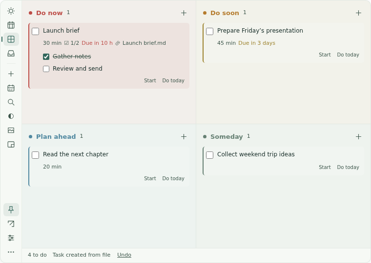

Bring the work with you.
Drop files, folders or a project workspace onto a task. Open them from your plan. Originals stay where they are.
A LITTLE STRUCTURE. MORE ROOM TO WORK.
Drop in a file. Give it a day. Keep the next step in sight, without another window getting in your way.
Windows · macOS · Linux / 中文 & English

AT HOME ON YOUR DESKTOP
The planner sits above your desktop and below other apps. Adjust the background and text transparency separately. Keep it fixed in a corner, or shrink it to the current task and the next two.
Drop files, folders or a project workspace onto a task. Open them from your plan. Originals stay where they are.
Pick up to three priorities for Today. Arrange the week with time estimates; planned dates stay separate from deadlines.
Four colors show urgency. Soon tasks with 48 hours or less remaining automatically appear in Now.
No account, no ads, no telemetry. Tasks stay on your computer, with rolling backups and JSON / CSV export.
Sample tasks · Actual app · 15 seconds
A real app walkthrough with sample tasks: drop a file, set a deadline, plan your day, then make room with mini mode.
DESKPLAN · v1.0.11
Choose your system. Each download links to the tested release on GitHub.
Windows builds are unsigned; macOS builds are ad-hoc signed and not notarized. Your system may show a first-launch prompt. Linux uses X11 / XWayland.
No. This is a desktop app. Task data is local; there is no cloud sync or account. GitHub is contacted for enabled update checks and downloads.
No. Attachments are links to files and folders already on your computer. Backups contain paths, not the original files.
Yes. Switch between English and Simplified Chinese in Settings. Your task content stays in the language you wrote it.
Versions 1.0.10 and earlier need one manual installation after the repository rename. Install over the old version to retain data. Newer versions support downloading updates in the app.